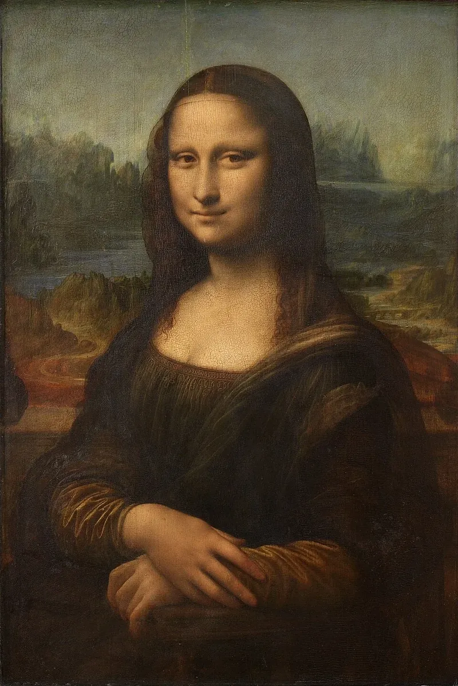

The real painting you saw at the LouvreOur Louvre discovery
Meet Mona Lisa
This is a portrait: a painting of a person.
Painted by Leonardo da Vinci01 · A real person
Her name was Lisa
Mona Lisa shows a real woman called Lisa Gherardini.
The person in the painting.
The artist who painted her more than 500 years ago.
02 · Look closely
The little smile
Is she smiling? Her expression can seem different each time you look.
Leonardo made the edges soft and smoky, almost like mist.
03 · Look behind Lisa
A world in the background
Leonardo painted a dreamy landscape behind her.
04 · A painting to protect
Wood behind glass
Leonardo painted on a flat piece of poplar wood. At the Louvre, a special glass case helps protect it.
The paint is on wood. A panel is a flat piece of wood.
It helps keep the old painting safe.
Smaller than many people expect!
05 · A true museum mystery
The painting disappeared!
Someone stole it from the Louvre. The museum found it again more than two years later.
Leonardo painted Lisa.
The painting was stolen.
It returned to the Louvre.
06 · Your detective notes
What do you remember?
Pick the parts you remember from our visit. You can choose more than one.
Tap a memory to keep it on this device.